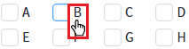
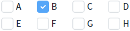
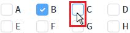
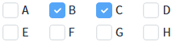
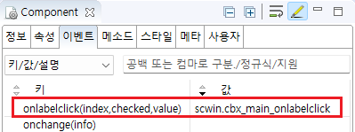

Checkbox에 'onlabelclick' 이벤트를 설정한 예제입니다. 이 이벤트는 항목의 문자열이 클릭될 때 발생하며, 'checkbox'가 클릭될 때는 발생하지 않습니다.
이벤트 핸들러에서 확인할 수 있는 정보는 다음과 같습니다.
index: 이벤트가 발생한 항목의 인덱스
checked: 이벤트가 발생한 항목의 체크 여부
value: 이벤트가 발생한 항목의 값
onlabelclick 이벤트 사용하기
1
STEP 1: 항목의 문자열을 클릭합니다.
'B' 항목의 문자열 'B'를 클릭합니다.
Image 1.브라우저(Chrome) 실행 예시

2
STEP 2: 실행 결과를 확인합니다.
'B' 항목이 체크되고 onlabelclick 이벤트가 발생됩니다. 핸들러를 통해 로그가 출력됩니다.
Image 2.브라우저(Chrome) 실행 예시

Example 1.Log
[11:58:58] # onlabelclick event 인덱스: 1 체크 여부: true 항목의 값: B
3
STEP 3: 항목의 체크 박스를 클릭합니다.
'C' 항목의 체크 박스를 클릭합니다.
Image 3.브라우저(Chrome) 실행 예시

4
STEP 4: 실행 결과를 확인합니다.
'C' 항목이 체크됩니다. 'onlabelclick' 이벤트는 발생하지 않으며, 로그도 출력되지 않습니다.
Image 4.브라우저(Chrome) 실행 예시

1
STEP 1: Checkbox의 onlabelclick 이벤트 핸들러를 설정합니다.
예제 파일에서는 핸들러로 사용할 메소드명을 'scwin.cbx_main_onlabelclick'로 설정하였습니다.
Image 5.웹스퀘어 스튜디오의 Component View - 이벤트 설정 예시

Example 2.Source
<xf:select ev:onlabelclick="scwin.cbx_main_onlabelclick" > <!-- 중략 --> </xf:select>
2
STEP 2: 'scwin.cbx_main_onlabelclick' 이벤트 핸들러를 정의합니다.
Example 3.Script
// Checkbox의 onlabelclick 이벤트 scwin.cbx_main_onlabelclick = function (index, checked, value) { let itemIndex = index; // 항목의 인덱스 let itemChecked = checked; // 항목의 체크 여부 let itemValue = value; // 항목의 값 };
onlabelclick(index, checked, value)